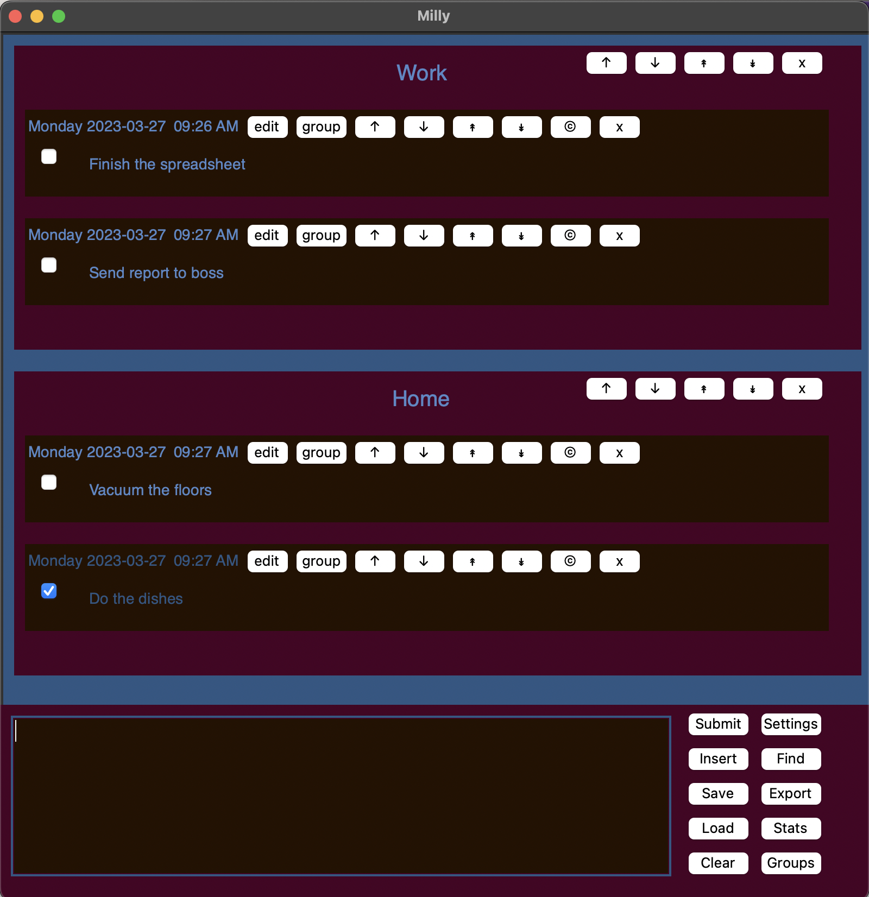

In simple terms, Milly is a to-do list app. It can also be used for note-taking, list-making, and journaling. It is designed to be simple and easy to use. Here are two examples of how Milly could be used.
If you only want to read one more paragraph, read this one and take off like a bird. Hit enter to submit an entry. The buttons attached to each entry are pretty straightforward: